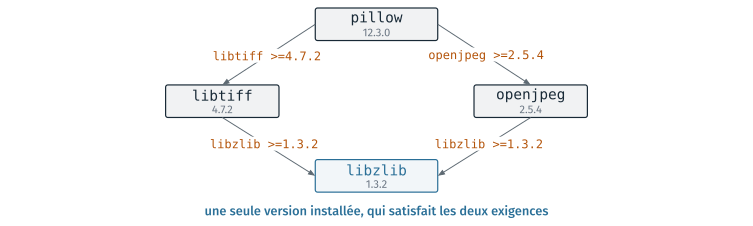
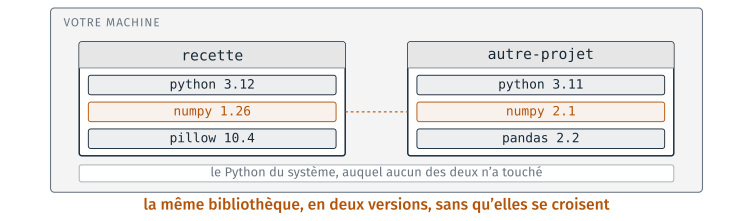
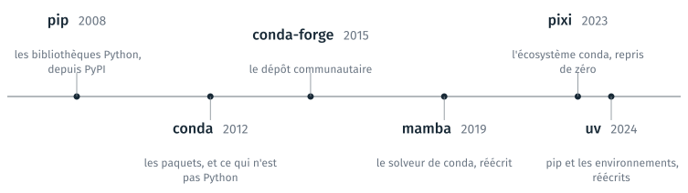
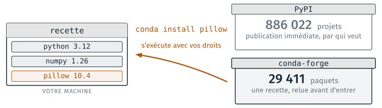
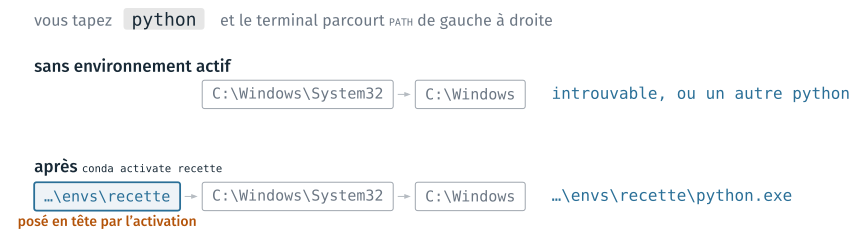
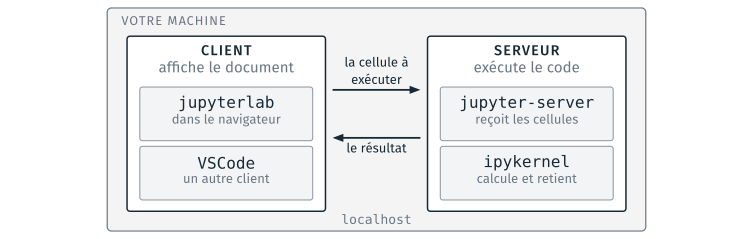
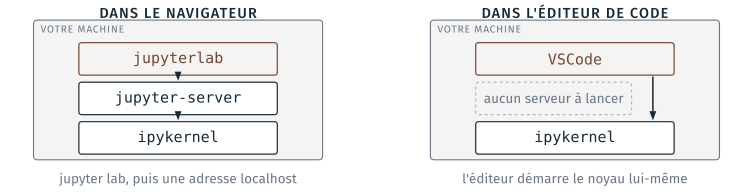

Bibliothèques et environnements Python#
Cette partie traite de ce dont un programme Python a besoin en plus de son propre code : les bibliothèques qu’il importe, les dépendances qu’elles entraînent, et l’environnement dans lequel elles sont installées. Elle présente ensuite les deux fichiers qui décrivent un projet et son environnement, le terminal de l’éditeur de code, puis la façon dont un notebook s’exécute, avec un client et un serveur. Trois TD l’accompagnent, le TD 4a, le TD 4b, facultatif et le TD 4c, facultatif ; ils sont présentés en fin de page.
Les bibliothèques d’un programme#
Un programme s’appuie sur du code déjà écrit. Lire un fichier CSV, calculer une racine carrée ou convertir du Markdown en HTML sont des opérations déjà programmées par d’autres, et un programme appelle ces fonctions existantes au lieu de les réécrire.
Bibliothèque
Ensemble de fonctions déjà écrites, regroupées pour être réutilisées par d’autres programmes. En Python, une bibliothèque se distribue et s’installe sous la forme d’un paquet (package).
Le mot anglais library se traduit par « bibliothèque » ; « librairie » est un faux ami, fréquent dans les documentations et les forums. Les bibliothèques qu’un programme Python emploie ont trois origines, et chacune pose une condition différente à l’exécution du programme.
Origine |
Exemples |
Ce qu’on écrit |
Ce que cela demande |
|---|---|---|---|
Livrées avec Python : la bibliothèque standard |
|
|
rien, elles sont installées avec l’interpréteur |
Écrites pour le projet |
les fichiers du projet, importés les uns par les autres |
|
que le projet ait été installé |
Publiées par d’autres |
|
|
que la bibliothèque ait été installée avant, depuis un dépôt de paquets |
L’import d’une bibliothèque et ses conditions#
Une bibliothèque se déclare par une ligne import, en tête du programme,
avant tout appel à ses fonctions. Une bibliothèque standard est toujours
disponible :
import math
print(math.sqrt(2))
1.4142135623730951
La bibliothèque standard de Python 3.12 compte un peu plus de deux cents
modules. La cellule suivante les compte, et vérifie la présence de quelques
noms ; numpy et markdown n’en font pas partie.
import sys
publics = [nom for nom in sys.stdlib_module_names if not nom.startswith("_")]
print(len(publics), "modules dans la bibliothèque standard")
for nom in ["math", "csv", "pathlib", "json", "numpy", "markdown"]:
print(f"{nom:10}", nom in sys.stdlib_module_names)
212 modules dans la bibliothèque standard
math True
csv True
pathlib True
json True
numpy False
markdown False
Une bibliothèque publiée par d’autres doit avoir été installée. Si elle ne
l’est pas, l’import échoue et le programme s’arrête dès cette ligne. Dans un
environnement qui ne contient que Python, import numpy se termine par ce
message :
ModuleNotFoundError: No module named 'numpy'
Le TD 4a fait rencontrer ce message. Sa cause est que la bibliothèque n’est
pas installée dans l’environnement où le programme s’exécute. La bibliothèque standard ne suffit
pas aux programmes du métier : ni numpy, ni pillow, ni pandas n’en font
partie. La suite de la partie montre comment installer une bibliothèque,
puis comment décrire ce qu’on a installé.
Un programme d’exemple : l’objectif#
Le programme qui sert d’exemple dans cette partie, et au TD 4a, fabrique une page de recette. Il lit deux fichiers : la description de la recette, en Markdown, et les quantités d’ingrédients pour une personne, en unités du système international. Il écrit une page HTML, où les quantités sont adaptées au nombre de personnes et au système d’unités demandés.
![À gauche, deux fichiers d'entrée : ingredients.csv, qui commence par les lignes « ingredient,quantite,unite », « Farine,60,g », « Lait,125,ml », et recette.md, qui contient le titre « Crêpes », la mention « 10 minutes de préparation » et le titre de section « Ingrédients ». Au milieu, le traitement : multiplier les quantités, les convertir, et poser le tableau sous le titre « Ingrédients ». À droite, la page produite : le titre Crêpes, puis un tableau Ingrédient, Quantité, avec Farine 240 g et Lait 500 ml.](../../_images/4_programme_recette.svg)
Les deux fichiers d’entrée, le traitement, et la page produite pour quatre personnes.#
Le fichier recette.md ne contient pas de tableau, seulement le titre
« Ingrédients » : le tableau est calculé à chaque exécution, ce qui permet au
même fichier de servir pour deux personnes comme pour douze. Pour quatre
personnes, les 60 g de farine du fichier deviennent 240 g.
La conversion des unités tient en deux divisions et s’écrit sans difficulté.
La conversion du Markdown en HTML est d’une autre taille : reconnaître les
titres, les listes, les tableaux, l’emphase, les liens et leurs combinaisons
représente plusieurs milliers de lignes de code. Le programme confie ce
travail à une bibliothèque, markdown.
Un programme d’exemple : le code#
Le corps du programme, recette_avec_tabulate.py, tient en une douzaine de
lignes. Le commentaire de chaque ligne indique d’où vient ce qu’elle emploie :
une bibliothèque installée, le code du projet, ou Python lui-même, c’est-à-dire
le langage et sa bibliothèque standard.
import markdown # installée
from tabulate import tabulate # installée
from recette.calculs import adapter, en_table, lire_ingredients # le projet
from recette.tableau import GABARIT # le projet
ingredients = lire_ingredients(DONNEES / "ingredients.csv") # le projet
ingredients = adapter(ingredients, PERSONNES, UNITES) # le projet
lignes = en_table(ingredients) # le projet
tableau = tabulate(lignes, headers=["Ingrédient", "Quantité"], tablefmt="github") # installée
source = (DONNEES / "recette.md").read_text(encoding="utf-8") # Python
source = source.replace("## Ingrédients", "## Ingrédients\n\n" + tableau) # Python
corps = markdown.markdown(source, extensions=["tables"]) # installée
page = GABARIT.format(titre="Crêpes", corps=corps) # Python
sortie.write_text(page, encoding="utf-8") # Python
PERSONNES, UNITES et DONNEES sont définis en tête du fichier : le
nombre de convives, le système d’unités et le dossier data/ du projet ;
sortie est le fichier HTML à écrire, recette.html, dans le dossier du
projet. Les lignes se lisent dans l’ordre du traitement.
lire_ingredientsouvre le fichier CSV et rend la liste des ingrédients, chacun sous la forme d’un nom, d’une quantité et d’une unité ; les quantités sont des nombres, et non du texte.
adaptermultiplie chaque quantité par le nombre de convives, puis la convertit si les unités américaines sont demandées.
en_tablefabrique les lignes du tableau à afficher ; c’est là que les nombres redeviennent du texte.
tabulatemet ces lignes en forme de tableau Markdown.
read_textetreplacelisent la recette et placent le tableau sous le titre « Ingrédients ».
read_textvient du modulepathlibde la bibliothèque standard,replaceest une méthode des chaînes de caractères du langage.markdown.markdownconvertit le texte Markdown en HTML.
formatetwrite_textinsèrent le HTML dans le gabarit de la page, puis écrivent le fichier.
Deux lignes seulement appellent une bibliothèque installée, tabulate et
markdown.markdown. Ce sont elles qui peuvent empêcher le programme de
fonctionner sur une autre machine : le code du projet est livré avec le projet,
la bibliothèque standard avec l’interpréteur, et seules les bibliothèques
installées peuvent manquer.
La cellule suivante exécute les quatre premières étapes sur les fichiers
réels du projet du TD 4a. La bibliothèque tabulate est installée dans
l’environnement qui construit cette page ; le code du projet, lui, n’y est pas
installé, et la cellule ajoute son dossier src à la liste des dossiers où
Python cherche les modules, sys.path, ce que fait aussi l’installation du
projet.
import sys
from pathlib import Path
from tabulate import tabulate
# Le projet du TD 4a, cherché en remontant depuis le dossier de cette page.
projet = next(
dossier / "data/cours1/4a_recette/depart/recette"
for dossier in [Path.cwd(), *Path.cwd().parents]
if (dossier / "data/cours1/4a_recette").is_dir()
)
sys.path.insert(0, str(projet / "src"))
from recette.calculs import adapter, en_table, lire_ingredients
ingredients = lire_ingredients(projet / "data" / "ingredients.csv")
ingredients = adapter(ingredients, 4, "SI")
lignes = en_table(ingredients)
print(tabulate(lignes, headers=["Ingrédient", "Quantité"], tablefmt="github"))
| Ingrédient | Quantité |
|--------------|------------|
| Farine | 240 g |
| Lait | 500 ml |
| Œufs | 4 |
| Sel | 4 g |
| Beurre fondu | 48 g |
Les dépendances d’une bibliothèque#
Une bibliothèque dont un programme a besoin pour s’exécuter est une dépendance de ce programme. Une bibliothèque a elle-même des dépendances, qui ont les leurs : installer une bibliothèque demande d’abord d’établir la liste complète des paquets nécessaires, puis de choisir une version de chacun qui convienne à tous ceux qui l’exigent.
- Dépendance directe
Paquet écrit dans le fichier qui décrit le projet ou l’environnement.
- Dépendance transitive
Paquet entraîné par une dépendance directe, ou par une autre dépendance transitive, sans avoir été demandé.
- Résoudre les dépendances
Calculer, à partir des dépendances directes, l’ensemble des paquets à installer et la version de chacun.
La relation est récursive : la même règle s’applique à chaque paquet atteint,
jusqu’à ce qu’aucun nouveau paquet n’apparaisse. L’environnement qui sert à
fabriquer les supports du module en donne l’ordre de grandeur : son fichier
demande sept paquets, dont numpy, pillow, pandoc et ffmpeg ; pillow
déclare 14 dépendances, ffmpeg 53, et l’environnement obtenu compte
293 paquets installés (relevés les 8 et 10 septembre 2026). Ce dernier nombre
n’est la somme d’aucun des précédents, car les dépendances se recouvrent.
L’outil d’installation établit cette liste, trop longue pour être tenue à la
main.

Deux dépendances de pillow exigent le même paquet, libzlib, dont une
seule version est installée.#
Résoudre les dépendances demande plus qu’un parcours de ce graphe : un même paquet
n’est présent qu’une fois dans l’environnement, et sa version doit satisfaire
toutes les exigences qui portent sur lui. Dans le schéma, libzlib 1.3.2
convient à libtiff comme à openjpeg. Si l’un des deux exigeait
libzlib <1.3, aucune version ne conviendrait, et conda refuserait de créer
l’environnement plutôt que d’en installer un qui ne fonctionne pas. Ce calcul
explique en partie la durée d’une installation. Des exigences qui se
recouvrent sont le cas ordinaire, et l’outil trouve presque toujours une
solution sans intervention.
Les paquets libtiff, openjpeg et libzlib ne sont pas écrits en Python :
ce sont des bibliothèques écrites en C et déjà compilées, que pillow appelle
pour lire et écrire les images. Une bibliothèque Python peut ainsi dépendre de
code compilé, qui doit exister pour chaque système d’exploitation ; c’est ce
code qui rend certaines installations difficiles.
Le numéro de version d’une dépendance#
D’une version à l’autre, une bibliothèque ajoute des fonctions et en retire
d’autres, si bien qu’un même code ne fonctionne pas avec toutes les versions
d’une bibliothèque. Le tableau donne deux lignes exécutées avec deux versions
de numpy.
Le code |
avec |
avec |
|---|---|---|
|
|
|
|
|
|
Sorties relevées le 10 septembre 2026 dans deux environnements. La page est
construite avec numpy 2.5.2, et la cellule suivante reproduit la dernière
colonne :
import numpy as np
print(np.__version__)
print(np.trapezoid([0, 1, 2]))
try:
np.NaN
except AttributeError as erreur:
print("AttributeError:", erreur)
2.5.2
2.0
AttributeError: `np.NaN` was removed in the NumPy 2.0 release. Use `np.nan` instead.
La fonction trapezoid n’existe qu’à partir de numpy 2.0 : un projet qui
l’emploie exige au moins cette version. C’est le cas ordinaire, puisqu’on
souhaite profiter de ce qui a été ajouté et corrigé. À l’inverse, np.NaN a
été retiré dans la même version, et un code qui l’emploie s’arrête avec
numpy 2 ; le reprendre a un coût, parfois sur des milliers de lignes, et
certains projets restent volontairement sur une version ancienne. Le premier
cas conduit à exiger numpy>=2, le second numpy<2 tant que le code n’est
pas repris.
La valeur désignée par np.NaN n’a pas disparu : la version 1.26 acceptait
trois écritures de la même valeur, np.nan, np.NaN et np.NAN, et la
version 2.0 n’en garde qu’une. Le retrait ne concerne que des écritures en
double de la même valeur, mais il oblige à modifier le code déjà écrit qui les
emploie.
Une dépendance se déclare donc par un nom et une exigence de version, comme
markdown>=3.5.
Environnement et conflits de dépendances#
Deux projets d’une même machine peuvent exiger deux versions différentes de la
même bibliothèque, par exemple numpy 1.26 pour l’un et numpy 2.1 pour
l’autre. Installées au même endroit, les deux versions ne coexistent pas : la
seconde installation remplace la première, et le projet qui exigeait celle-ci
ne fonctionne plus.
Environnement
Dossier qui contient une version de Python et les paquets installés pour un projet, isolé des autres environnements de la machine. Il se décrit dans un fichier, se recrée ailleurs à partir de ce fichier, et se supprime sans conséquence pour le reste de la machine.

Deux environnements sur la même machine, avec deux versions de numpy.#
Avec un environnement par projet, les deux versions sont installées dans deux
dossiers distincts, et le Python déjà présent sur la machine n’est pas
modifié. Le même mot python désigne alors des programmes différents selon
l’environnement actif : la commande
python -c "import numpy; print(numpy.__version__)" affiche une version dans
un environnement, et une autre après conda activate recette.
Avertissement
Un ModuleNotFoundError sur un paquet qui vient d’être installé signifie
presque toujours que le paquet a été installé dans un autre environnement que
celui où le programme s’exécute. La première vérification consiste à afficher
quel Python s’exécute, avant de chercher une autre cause ; la section sur
l’activation montre comment.
Les outils d’installation des paquets#
Plusieurs outils installent des paquets Python, et l’écosystème évolue encore.
Aucun n’a fait disparaître les précédents : pip a dix-huit ans, reste le
plus employé, et uv l’appelle encore pour certaines opérations.

Les outils d’installation et le dépôt conda-forge, à leur date de création (dates de création des dépôts de code, relevées le 8 septembre 2026 par l’API de GitHub).#
pip n’installe que des bibliothèques Python : il ne sait installer ni
ffmpeg, ni un compilateur C++. conda installe aussi bien des bibliothèques
Python que des programmes qui ne sont pas écrits en Python, et c’est la raison
de son choix dans ce module : conda crée les environnements et installe les
dépendances, et pip sert seulement à installer le projet lui-même depuis son
dossier. mamba a réécrit le solveur de conda, c’est-à-dire la partie qui
résout les dépendances. uv et pixi, récents, résolvent les dépendances en
quelques secondes, l’un du côté de pip, l’autre de celui de conda ; ils
sont hors du programme du module, qui s’en tient à un seul outil.
pyenv, créé la même année que conda, ne figure pas sur la frise : il
choisit la version de Python active et n’installe aucun paquet. Son nom le
fait souvent confondre avec les outils d’installation.
Avertissement
Deux outils d’installation employés sur un même environnement ne voient pas
les paquets posés par l’autre, et l’un peut remplacer un paquet installé
par l’autre par une version incompatible avec le reste de l’environnement.
Un environnement créé avec conda reçoit ses paquets par conda ; la seule
exception, dans le module, est l’installation du projet lui-même par pip.
Les dépôts de paquets#
Une commande d’installation télécharge le paquet depuis un dépôt de paquets (repository), un serveur qui en conserve un grand nombre. Les deux dépôts du monde Python n’acceptent pas les paquets aux mêmes conditions.

Les deux dépôts de paquets Python, et ce qu’une installation fait entrer sur la machine (projets relevés le 8 septembre 2026 dans l’index de PyPI, recettes conda-forge le même jour).#
PyPI (Python Package Index) est le dépôt de référence du monde Python,
celui où paraissent d’abord la plupart des bibliothèques et où pip va les
chercher. Y publier un paquet est immédiat et ne passe par aucune relecture.
conda-forge est le dépôt communautaire de conda : chaque paquet y entre
par une recette, relue par des mainteneurs, qui décrit comment le construire
pour les trois systèmes d’exploitation. PyPI contient environ trente fois plus
de projets, parce que conda-forge ne contient que les paquets dont quelqu’un a
proposé la recette.
Les deux dépôts sont liés : un paquet conda-forge est le plus souvent construit à partir de la version publiée sur PyPI, quelques jours plus tard. La relecture de la recette rend la publication sur conda-forge plus exigeante, mais elle ne garantit rien sur le code de la bibliothèque elle-même.
Avertissement
Installer un paquet exécute du code écrit par quelqu’un d’autre, sur votre
machine, avec vos droits et sur vos fichiers. Des paquets malveillants sont
publiés sous des noms voisins de bibliothèques connues, comme reqeusts pour
requests, et une faute de frappe dans la commande suffit à les installer.
Le nom d’un paquet se copie depuis la documentation du projet plutôt que de
se taper de mémoire.
Note
Sur les postes de la salle, conda est celui de la distribution Anaconda, qui
consulte par défaut les dépôts d’Anaconda (defaults). Le module prend ses
paquets sur conda-forge, d’où l’option -c conda-forge des commandes. Les
dépôts d’Anaconda ont des conditions d’utilisation, que conda demande
d’accepter une fois par compte, et qui imposent une licence payante aux
grandes organisations.
La création d’un environnement et sa description#
Un environnement s’obtient de deux façons avec conda : en le composant par
des commandes, ou en le créant à partir d’un fichier qui le décrit. Les deux
donnent le même environnement.
conda create -n recette -c conda-forge python=3.12
conda install -n recette -c conda-forge markdown tabulate
conda activate recette
Aucune trace de ces commandes ne reste dans le projet : pour refaire l’environnement sur une autre machine, il faut se souvenir de ce qui a été tapé.
conda env create -f environment.yml
conda activate recette
Le fichier environment.yml, à la racine du projet :
name: recette
channels:
- conda-forge
dependencies:
- python=3.12
- markdown
- tabulate
L’option -n recette désigne l’environnement sur lequel porte la commande,
sans l’activer ; l’activation est la commande conda activate, décrite dans
la section suivante. L’option -c conda-forge désigne le dépôt d’où viennent
les paquets, et correspond à la ligne channels du fichier. Dans le fichier,
name donne le nom de l’environnement et dependencies les dépendances
directes, avec leur exigence de version quand il y en a une.
Le fichier environment.yml n’installe rien : il dit ce qu’il faut installer,
et conda env create le lit. Il ne contient que les dépendances directes ;
la liste complète des paquets installés dépend du système d’exploitation, les
paquets compilés n’étant pas les mêmes sous Windows et sous Linux, et l’outil
la recalcule sur chaque machine. Le fichier est rangé avec le code du projet
et le suit d’une machine à l’autre ; le versionner est le sujet du cours 2.
Un projet qui n’a pas ce fichier écrit au moins dans son README les
commandes qui composent son environnement.
Une installation se refait à partir du fichier qui la décrit, sans dépendre
du souvenir des commandes tapées. Le TD 4a fait écrire les deux textes qui
manquent pour cela à son projet : le fichier environment.yml, et la
section du README qui dit comment installer le projet.
L’activation d’un environnement#
Activer un environnement n’installe rien et ne déplace aucun fichier. Quand on
tape python, le terminal cherche un programme de ce nom dans une liste de
dossiers, la variable PATH, qu’il parcourt dans l’ordre, et il exécute
le premier trouvé. L’activation place le dossier de l’environnement en tête de
cette liste.

Les dossiers parcourus pour trouver python, avant et après l’activation de
l’environnement recette, sur un poste Windows.#
Le mot python désigne ainsi le premier fichier de ce nom trouvé dans les
dossiers de PATH, qui change avec l’environnement actif. Sous Windows, le
programme python.exe d’un environnement est à la racine de son dossier, et
l’activation ajoute aussi à PATH les sous-dossiers Scripts et
Library\bin, que le schéma ne montre pas. Sous macOS et Linux, le dossier
ajouté est …/envs/recette/bin, placé devant /usr/bin. Sans environnement
actif, python peut être introuvable, ou désigner une autre installation.
Deux conséquences en découlent. conda install, sans option -n, installe
le paquet dans l’environnement actif, et un programme lancé depuis un terminal
où un autre environnement est actif ne le trouve pas. Désactiver un
environnement, par conda deactivate, ne désinstalle rien : cela retire son
dossier de la tête de PATH.
Le chemin de l’interpréteur qui exécute un programme s’affiche depuis Python,
par sys.executable. Le chemin affiché ci-dessous est celui de l’interpréteur qui a exécuté cette page
à sa construction, sous Linux, et il contient le nom de l’environnement,
info01 :
import sys
print(sys.executable)
/home/ndavid/miniconda3/envs/info01/bin/python
PATH est repris au cours 2, avec les chemins et le dossier courant.
Les métadonnées d’un projet#
Un projet Python se décrit dans un fichier texte, pyproject.toml, placé à
la racine du projet : son nom, sa version, les versions de Python qu’il
accepte, et les bibliothèques dont son code a besoin. Voici l’essentiel de
celui du projet du TD 4a :
[project]
name = "recette"
version = "0.1.0"
description = "Met une recette Markdown à l'échelle et en fait une page HTML."
readme = "README.md"
requires-python = ">=3.10"
dependencies = ["markdown>=3.5", "tabulate>=0.9"]
# Ce que la commande `recette` doit appeler, une fois le projet installé.
# Sans installation, la même chose se lance par `python -m recette`.
[project.scripts]
recette = "recette.__main__:main"
Ce qui est écrit |
Ce que c’est |
|---|---|
|
les métadonnées du projet |
|
les versions de Python acceptées |
|
les bibliothèques que le code importe, avec leur exigence de version |
|
la commande que l’installation du projet crée, ici |
Le projet du TD 4a contient ainsi deux fichiers de description, qui ne décrivent pas la même chose et ne s’adressent pas au même outil. Aucun des deux n’installe quoi que ce soit.
Fichier |
Décrit |
Lu par |
|---|---|---|
|
l’environnement : la version de Python, et tout ce qu’il faut sur la machine, y compris ce qui n’est pas du Python |
|
|
le projet : son nom, sa version, les bibliothèques que son code importe, la commande qu’il installe |
|
La plupart des projets ont les deux fichiers, et les mêmes bibliothèques
peuvent figurer dans l’un et dans l’autre. Le code réutilisé au début de cette
partie est disponible parce que ses auteurs ont écrit un fichier de cette
forme, puis déposé le paquet obtenu sur un dépôt. La fabrication d’un paquet,
avec [project.scripts], est le sujet du cours 3.
YAML et TOML#
environment.yml et pyproject.toml sont écrits dans deux formats de texte
destinés à décrire des données : des données structurées, écrites par un
humain et lues par un programme.
- YAML
Format où l’indentation porte la structure, et où un tiret marque un élément de liste. Extension
.ymlou.yaml.- TOML
Format fait de sections dont le nom est entre crochets, chacune contenant une valeur par nom, sous la forme
nom = valeur. Extension.toml.
Comme JSON, ces deux formats décrivent des données ; contrairement à JSON, ils acceptent des commentaires, ce qui les rend adaptés aux fichiers qu’un humain écrit et relit. On les retrouve hors de Python, pour les réglages d’un outil, la description d’une chaîne d’intégration ou la composition de conteneurs.
Avertissement
En YAML, l’indentation se fait avec des espaces, jamais avec une tabulation.
Un fichier environment.yml indenté par une tabulation est refusé par
conda. L’éditeur de code signale l’erreur, et l’affichage des caractères
invisibles, vu à la partie 2, permet de la trouver.
Le terminal de l’éditeur de code#
L’éditeur de code ouvre un terminal dans sa propre fenêtre, déjà placé dans le dossier du projet ouvert. Ce terminal intégré est le même programme qu’un terminal ouvert hors de l’éditeur, affiché dans la fenêtre de celui-ci. Le TD 2a s’en est servi pour lancer le premier programme.
L’action |
Ce qu’elle règle |
|---|---|
menu Terminal, puis New Terminal |
ouvre un terminal dans le dossier ouvert |
la flèche à côté du |
l’interpréteur de commandes : PowerShell, Command Prompt ( |
|
l’environnement activé dans chaque nouveau terminal |
la barre d’état, en bas de la fenêtre |
affiche l’environnement en cours |
L’environnement choisi par Python: Select Interpreter est activé dans les
terminaux ouverts ensuite ; un terminal déjà ouvert garde le sien. La barre
d’état permet de vérifier l’environnement en cours sans rien taper, et évite
le ModuleNotFoundError dû à un paquet installé dans un autre environnement.
Le dossier du projet est le dossier courant du terminal intégré : les chemins relatifs écrits dans les commandes partent de lui. Les libellés des menus dépendent de la version de l’éditeur et de la langue de son interface, l’anglais par défaut. L’ouverture d’un terminal hors de l’éditeur est traitée en annexe et au cours 2.
Le client et le serveur d’un notebook#
Un notebook fonctionne comme une application web, en deux parties : un client, qui affiche le document et envoie les cellules à exécuter, et un serveur, qui les exécute et renvoie les résultats.

Le client et le serveur d’un notebook, sur la même machine.#
Noyau
Processus qui exécute le code des cellules d’un notebook et conserve en
mémoire les variables qu’elles définissent. Pour Python, le noyau est fourni
par le paquet ipykernel.
Dans l’application web de la partie 1, le serveur était une autre machine.
Pour un notebook ouvert avec JupyterLab, le serveur est sur la même machine
que le navigateur, et le navigateur s’y adresse comme à un site web, par une
adresse de la forme localhost:8888/lab?token=…. Le jeton (token) de
l’adresse est un mot de passe à usage unique, qui empêche un autre poste du
réseau d’exécuter du code sur ce serveur ; le cours 5 y revient.
Le noyau conserve les variables entre deux cellules, et il n’exécute que les
cellules qu’on lui envoie. Si une cellule x = 10 a été exécutée, puis
modifiée en x = 3 sans être exécutée à nouveau, une cellule print(x * 2)
affiche encore 20. La commande qui redémarre le noyau puis exécute toutes
les cellules dans l’ordre (Restart Kernel and Run All Cells dans JupyterLab)
remet le résultat en accord avec le texte ; elle s’emploie avant de partager
un notebook.
Changer de client ne change pas le noyau : JupyterLab et l’éditeur de code ouvrent le même fichier et le font exécuter par le même noyau. À l’ouverture d’un notebook, l’éditeur demande quel noyau employer : ce choix désigne l’environnement Python qui exécutera les cellules.
Les trois emplacements du serveur#
Client et serveur désignent deux rôles, qui peuvent être tenus par deux machines différentes ou par la même. Le serveur d’un notebook peut se trouver à trois endroits.
![Trois cas côte à côte. Sur un ordinateur distant : votre machine contient le navigateur, le client ; le serveur et le noyau sont hors de votre machine, reliés par le réseau ; exemples : Colab, un serveur du laboratoire. Sur votre ordinateur : votre machine contient le navigateur et jupyter-server avec le noyau, reliés par localhost ; exemples : jupyter lab, ou l'éditeur de code. Dans le navigateur : votre machine contient le navigateur, qui contient lui-même le noyau Python, et il n'y a pas de serveur ; exemple : JupyterLite, rien ne sort de l'onglet.](../../_images/4_trois_serveurs.svg)
Les trois emplacements possibles du serveur d’un notebook.#
Dans le premier cas, le code et les données partent sur une machine que
l’utilisateur ne possède pas. Colab demande un compte, et ce qu’on y dépose
est envoyé sur les serveurs de Google ; ce service peut servir pour un essai
ponctuel, mais il ne convient pas pour rendre un travail. Dans le deuxième cas, celui du module,
jupyter lab démarre un serveur sur le poste de l’utilisateur, et l’adresse
localhost:8888 montre que ce serveur est local : rien ne sort de la machine.
Dans le troisième cas, JupyterLite, le noyau Python est compilé en
WebAssembly et exécuté par le navigateur lui-même, dans l’onglet : il n’y a
plus de serveur du tout. Le navigateur figurait déjà, à la partie 2, parmi les
interpréteurs, à côté de python. JupyterLite permet d’ouvrir un notebook en
quelques secondes, sans compte ni installation ; il ne convient pas pour
travailler, car toutes les bibliothèques n’y sont pas disponibles et ce qu’on
y dépose est conservé par le navigateur.
Comme pour l’application web de la partie 1, la question utile pour un service donné est de savoir quelles données quittent la machine, et à quel moment.
Les clients d’un notebook#
Le même fichier de notebook s’ouvre avec plusieurs clients, et tous ont besoin du même noyau. Les deux clients du module ne demandent pas les mêmes paquets dans l’environnement.

Les paquets nécessaires à chacun des deux clients.#
JupyterLab est une page web servie par jupyter-server, qui transmet les
cellules au noyau : l’environnement doit contenir jupyterlab, qui entraîne
jupyter-server, et ipykernel. L’éditeur de code démarre le noyau lui-même,
sans serveur : un environnement ouvert dans l’éditeur n’a besoin que
d”ipykernel. L’éditeur sait aussi se connecter à un serveur déjà démarré, à
partir de son adresse, ce qui correspond au premier cas de la section
précédente.
Le langage des cellules est déterminé par le noyau ; le format du fichier
est le même pour tous les langages. ipykernel est le noyau Python ; il
existe des noyaux pour d’autres langages, comme IRkernel pour R ou IJulia pour Julia, et le nom
Jupyter vient de Julia, Python et R. Le module s’en tient à Python.
TD de la partie#
TD 4a — Installer un projet Python, et décrire son installation, 20 minutes : installer dans un environnement neuf les deux sortes de dépendances du projet de la recette, puis écrire le fichier qui décrit cet environnement et la section du
READMEqui dit comment l’installer.TD 4b — Le client, le noyau, et où ils sont installés, facultatif, 20 minutes : vérifier ce qu’un environnement contient pour ouvrir un notebook, puis installer le client et le noyau au même endroit ou séparément.
TD 4c — Installer un projet en lisant son README, facultatif, 15 minutes : installer et lancer un projet écrit par d’autres, dont les dépendances ne sont pas des bibliothèques Python, à partir de sa seule documentation.
Les TD des autres parties sont dans Travaux dirigés de la séance 1.